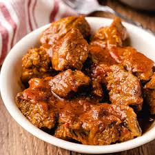

Home
Meat Stew

Description
A meat stew features tender chunks of beef slow-cooked in a rich broth with root vegetables
Ingredients
- meat
- Aromatics
- Vegetables
- Liquid
Steps
- Toss the beef cubes in flour, salt, and pepper. Sear them in hot oil in a heavy pot or Dutch oven until browned on all sides
- Cook the onions, carrots, and celery in the same pot until softened. Add garlic and cook for another minute.
- Pour in red wine and beef broth, scraping up any browned bits from the bottom. Return the beef to the pot with bay leaves.
- Cover and simmer on low heat for about 1.5 hours. Add the potatoes and cook for another 20 to 30 minutes until everything is tende